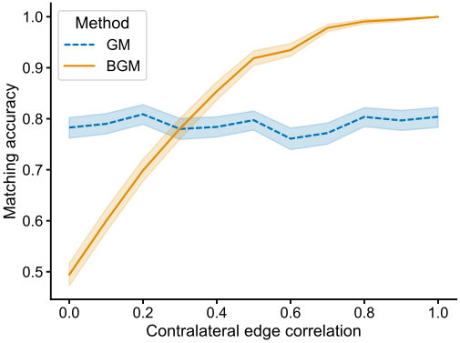

Graph matching for connectomics#
Benjamin D. Pedigo#
(he/him) NeuroData lab Johns Hopkins University Dept. of Biomedical Engineering
 bpedigo@jhu.edu
bpedigo@jhu.edu
 @bdpedigo (Github)
@bdpedigo (Github)
 @bpedigod (Twitter)
@bpedigod (Twitter)
 bdpedigo.github.io
bdpedigo.github.io
These slides at:#
Bilaterally homologous neuron pairs#
We believe a matching exists!

Larval Drosophila (AKA a maggot) brain connectome#
Collaboration with Marta Zlatic/Albert Cardona’s groups - led by Michael Winding
First whole-brain, single-cell connectome of any insect
~3000 neurons, ~550K synapses
Both hemispheres of the brain reconstructed

Neuron pairs#


Why care about the pairs?#
Understand stereotypy
Proofreading
Downstream analysis
Omnibus embedding, for example
Useful to collapse complexity by ~2
Can we use networks to predict this matching?#

Graph matching - what is it?#

Graph matching - how do we know if we’re doing good?#
\(\min_{P \in \mathcal{P}} \|A - P B P^T\|_F^2\)#
\(\mathcal{P}\) is the set of permutation matrices
Measures the number of edge disagreements for unweighted
Norm of edge disagreements for weighted

Graph matching - how do we do it?#
\(\min_{P \in \mathcal{P}} \|A - P B P^T\|_F^2\)#
Search space is not convex:
\(0.5 P_1 + 0.5 P_2 \notin \mathcal{P}\)
Relax to the “birkoff polytope:” doubly stochastic matrices
Rows and columns all sum to 1, but not all elements have to be 1
Similar to transport as opposed to assignment problems: we are still mapping nodes between networks, but this is a soft mapping
Apply Frank-Wolfe method
Minimize a first-order Taylor series of the objective function over a convex set
Requires a gradient \(\nabla f(P)\)
How does it do on the maggot brain?#

~76-80% correct on the full brain connectome for left-right pair prediction
Lots of bells and whistles one can add:
Edge types
Seeds
Morphology
Thus far, we’ve not used the contralateral connections#
These are about 1/3 of the edges in the brain!#
From graph matching to bisected graph matching#

New gradient:
Simulations#
Created simulated networks with two “sides”
Ipsilateral subgraphs had edge correlation of 0.8
Contralateral subgraphs had varying correlation (x-axis at right)
Measured matching accuracy for graph matching (GM) and bisected graph matching (BGM)

Connectome datasets#

Summary#
Modified the graph matching problem to allow us to incorporate information from contralateral connections in the brain
Proposed an algorithm to solve the problem, which amounts to a simple modification of previous graph matching tools (FAQ)
Showed in simulation that with sufficient correlation in contralateral edges, this can help with matching
Demonstrated that this indeed improves matching in five different bilateral connectome datasets
More info#
Tutorial on graph matching https://bdpedigo.github.io/networks-course/graph_matching.html
Code in graspologic https://microsoft.github.io/graspologic/latest/reference/reference/match.html
Code in SciPy https://docs.scipy.org/doc/scipy/reference/generated/scipy.optimize.quadratic_assignment.html
Big thanks to Ali Saad-Eldin for writing most of the code!
This repo: neurodata/bgm
This Jupyter Book: http://docs.neurodata.io/bgm/abstract.html
This manuscript: https://www.biorxiv.org/content/10.1101/2022.05.19.492713